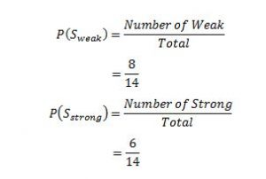
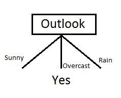
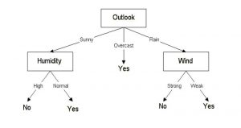

Decision Tree
Decision Tree Classification
Pengertian decision tree¶
Decision tree adalah salah satu metode klasifikasi yang paling populer karena mudah diinterpresentasikan oleh manusia. Decision tree untuk pengenalan pola. Decision tree menjelaskan apa inputnya dan apa output yang sesuai dalam data pelatihan. Seperti namanya hasil akhir berupa pohon. Pohon itu dapat dijelaskan oleh dua entitas, yaitu simpul keputusan dan daun. Daunnya adalah keputusan atau hasil akhir. Dan node keputusan adalah tempat data dipecah.
Manfaat utama dari penggunaan decision tree adalah kemampuannya untuk mem-break down proses pengambilan keputusan yang kompleks menjadi lebih simple, sehingga pengambil keputusan akan lebih menginterpretasikan solusi dari permasalahan. Decision tree juga berguna untuk mengeksplorasi data, menemukan hubungan tersembunyi antara sejumlah calon variabel input dengan sebuah variabel target.

Ada dua jenis utama Pohon Keputusan :
- Pohon klasifikasi (jenis Ya / Tidak)
Apa yang kami lihat di atas adalah contoh pohon klasifikasi, di mana hasilnya adalah variabel seperti 'cocok' atau 'tidak cocok'. Di sini variabel keputusannya adalah Kategorikal.
- Pohon regresi (tipe data berkelanjutan)
Di sini keputusan atau variabel hasil adalah berkelanjutan, mis. angka seperti 123.
Sekarang kita tahu apa itu Decision Tree, kita akan melihat cara kerjanya secara internal. Ada banyak algoritma di luar sana yang membangun decision tree, tetapi salah satu yang terbaik disebut sebagai Algoritma ID3. ID3 Singkatan dari Iterative Dichotomiser 3.
Cara Kerja :
Bagaimana cara kerja algoritma Decision tree?
Ide dasar di balik algoritma pohon keputusan adalah sebagai berikut:
-
Pilih atribut terbaik menggunakan Attribution Selection Measures (ASM) untuk membagi catatan.
-
Jadikan atribut itu sebagai simpul keputusan dan pisahkan dataset menjadi himpunan bagian yang lebih kecil.
-
Mulailah membangun pohon dengan mengulangi proses ini secara rekursif untuk setiap anak sampai salah satu dari kondisi tersebut akan cocok:
-
Semua tupel memiliki nilai atribut yang sama.
-
Tidak ada lagi atribut yang tersisa.
- Tidak ada contoh lagi.
Kelebihan dan kekurangan¶
- Kelebihan
- Daerah pengambilan keputusan yang sebelumnya kompleks dan sangat global, dapat diubah menjadi simple dan spesifik.
- Eliminasi perhitungan-perhitungan yang tidak diperlukan, karena ketika menggunakan metode pohon keputusan maka contoh diuji hanya berdasarkan kriteria atau kelas-kelas tertentu.
- Fleksibel untuk memilih fitur dari internal node yang berbeda, fitur yang terpilih akan membedakan suatu kriteria dibandingkan kriteria yang lain dalam node yang sama.
- Metode pohon keputusan dapat menghindari munculnya permasalahan ini dengan menggunakan kriteria yang jumlahnya lebih sedikit pada setiap node internal tanpa banyak mengurangi kualitas keputusan yang dihasilkan.
- Kekurangan
- Terjadi overlap terutama ketika kelas-kelas dan kriteria yang digunakan jumlahnya sangat banyak. Hal tersebut juga dapat menyebabkan meningkatnya waktu pengambilan keputusan dan jumlah memori yang diperlukan.
- Pengakumulasian jumlah eror dari setiap tingkat dalam sebuah pohon keputusan yang besar.
- Kesulitan dalam mendesain pohon keputusan yang optimal
- Hasil kualitas keputusan yang didapatkan dari metode pohon keputusan sangat tergantung pada bagaimana pohon tersebut didesain.
Entropi¶
Entropi, juga disebut sebagai Shannon Entropi dilambangkan oleh H (S) untuk himpunan S terbatas, adalah ukuran jumlah ketidakpastian atau keacakan data.
Information gain¶
Informasi gain juga disebut sebagai divergensi Kullback-Leibler yang dilambangkan oleh IG (S, A) untuk himpunan S adalah perubahan efektif dalam entropi setelah memutuskan atribut tertentu A. Ini digunakan untuk mengukur perubahan relatif dalam entropi sehubungan dengan variabel independen.
Gain informasi didasarkan pada penurunan entropi setelah dataset dibagi pada atribut. Membangun pohon keputusan adalah tentang menemukan atribut yang mengembalikan perolehan informasi tertinggi (mis., Cabang yang paling homogen).
contoh kasus :
| Day | Outlook | Temperature | Humidity | Wind | Play Golf |
|---|---|---|---|---|---|
| D1 | Sunny | Hot | High | Weak | No |
| D2 | Sunny | Hot | High | Strong | No |
| D3 | Overcast | Hot | High | Weak | Yes |
| D4 | Rain | Mild | High | Weak | Yes |
| D5 | Rain | Cool | Normal | Weak | Yes |
| D6 | Rain | Cool | Normal | Strong | No |
| D7 | Overcast | Cool | Normal | Strong | Yes |
| D8 | Sunny | Mild | High | Weak | No |
| D9 | Sunny | Cool | Normal | Weak | Yes |
| D10 | Rain | Mild | Normal | Weak | Yes |
| D11 | Sunny | Mild | Normal | Strong | Yes |
| D12 | Overcast | Mild | High | Strong | Yes |
| D13 | Overcast | Hot | Normal | Weak | Yes |
| D14 | Rain | Mild | High | Strong | No |
Algoritma ID3 akan melakukan tugas-tugas berikut secara rekursif
- Buat simpul akar untuk pohon.
- Jika semua contoh positif, kembalikan simpul daun ‘positif’.
- Jika semua contoh negatif, kembalikan simpul daun ‘negatif’.
- Hitung entropi keadaan saat ini H (S).
- Untuk setiap atribut, hitung entropi sehubungan dengan atribut 'x' yang dilambangkan dengan H (S, x).
- Pilih atribut yang memiliki nilai IG maksimum (S, x).
- Hapus atribut yang menawarkan IG tertinggi dari set atribut.
- Ulangi sampai kita semua atribut habis, atau pohon keputusan memiliki semua simpul daun.
Selanjutnya kita akan membuat pohon keputusan. Langkah awal adalah menghitung H (S), Entropi dari kondisi saat ini. Dalam contoh di atas, kita dapat melihat secara total ada 5 Tidak dan 9 Ya.
| Yes | No | Total |
|---|---|---|
| 9 | 5 | 14 |
Ingatlah bahwa Entropi adalah 0 jika semua anggota memiliki kelas yang sama, dan 1 ketika setengah dari mereka termasuk satu kelas dan setengah lainnya milik kelas lain yang merupakan data acak. 0,94 yang artinya distribusinya cukup acak.
Langkah selanjutnya adalah memilih atribut yang memberi hasil Informasi setinggi mungkin yang akan pilih sebagai simpul root. Mari kita mulai dengan 'Wind'.
di mana ‘x’ adalah nilai yang mungkin untuk atribut. Di sini, atribut ‘Wind’ mengambil dua kemungkinan nilai dalam data sampel, karenanya x = {Lemah, Kuat}
Di antara semua 14 contoh yang kami miliki **8 tempat di mana angin lemah dan 6 di mana angin kuat. **
| Wind = Weak | Wind = Strong | Total |
|---|---|---|
| 8 | 6 | 14 |

Sekarang dari 8 contoh lemah, 6 di antaranya adalah 'Ya' untuk Play Golf dan 2 di antaranya adalah 'Tidak' untuk 'Play Golf'. Jadi kita punya,
Demikian pula, dari 6 contoh kuat, kami memiliki 3 contoh di mana hasilnya adalah 'Ya' untuk Play Golf dan 3 di mana kami memiliki 'Tidak' untuk Play Golf.
Ingat, di sini setengah item milik satu kelas sedangkan setengah lainnya milik kelas lain. Karenanya kita memiliki data acak. Sekarang kita memiliki semua bagian yang diperlukan untuk menghitung Informasi gain,
Menentukan i gain informaton dengan mempertimbangkan 'Wind' sebagai fitur dan memberi kami informasi sebesar 0,048. Sekarang kita juga harus menghitung Gain information untuk semua fitur.
Kita dapat dengan jelas melihat bahwa IG (S, Outlook) memiliki perolehan informasi tertinggi 0,246, maka kami memilih atribut Outlook sebagai simpul akar. Pada titik ini, pohon keputusan terlihat seperti.

Di sini kami mengamati bahwa setiap kali prospek Overcast, Play Golf selalu 'Ya', itu bukan kebetulan, pohon sederhana dihasilkan karena **perolehan informasi tertinggi diberikan oleh atribut Outlook **.
Sekarang bagaimana kita melanjutkan dari titik ini? kita cukup menerapkan rekursi, kita mungkin ingin melihat langkah-langkah algoritma yang dijelaskan sebelumnya.
Sekarang kami telah menggunakan Outlook, kami memiliki tiga dari mereka yang tersisa Kelembaban, Suhu, dan Angin. Dan, kami memiliki tiga kemungkinan nilai Outlook: Sunny, Overcast, Rain. Di mana simpul Overcast sudah berakhir memiliki simpul daun 'Ya', jadi kami pergi dengan dua sub pohon untuk menghitung: Sunny dan Rain.
Tabel Sunny :
| Temperature | Humidity | Wind | Play Golf |
|---|---|---|---|
| Hot | High | Weak | No |
| Hot | High | Strong | No |
| Mild | High | Weak | No |
| Cool | Normal | Weak | Yes |
| Mild | Normal | Strong | Yes |
Dengan cara yang sama, kami menghitung nilai-nilai berikut :
Seperti yang bisa kita lihat, Gain Information tertinggi diberikan oleh Kelembaban. Kita dapat menentukan Angin sebagai atribut dengan perolehan informasi tertinggi. Decision Tree terakhir terlihat seperti ini.
Decision Tree terakhir terlihat seperti ini.

Implementasi¶
Dataset yang akan digunakan untuk membuat ilustrsi algoritma decision tree adalah dataset Iris. Ada beberapa tahapan yang harus dilalui sebagai berikut :
- Import libraries yang diperlukan dan import dataset yang akan digunakan.
import pandas as pd import numpy as np from sklearn.tree import DecisionTreeClassifier from sklearn.model_selection import train_test_split data = pd.read_csv("C:/diabetes.csv")
X = data[data.columns[0:-1]] #del(X['SkinThickness']) #del(X['BloodPressure']) #del(X['Pregnancies']) #del(X['Insulin']) #del(X['DiabetesPedigreeFunction']) #del(X['Glucose']) Y = data[data.columns[-1]] # create a helper function
- Membagi data menjadi data training dan data set, lalu melihat akuransi data.
X_train,X_test,y_train,y_test = train_test_split(X,Y,stratify=Y,random_state=42) tree = DecisionTreeClassifier(max_depth=4,random_state=0) tree.fit(X_train,y_train) print("Accuracy on training set: {:.3f}".format(tree.score(X_train,y_train))) print("Accuracy on test set: {:.3f}".format(tree.score(X_test,y_test)))
Accuracy on training set: 0.818 Accuracy on test set: 0.766
- Menentukan fitur apa saja yang penting
import matplotlib.pyplot as plt import numpy as np def plot_feature_importances_adult_census(model): n_features = X.shape[1] plt.barh(range(n_features),model.feature_importances_,align='center') plt.yticks(np.arange(n_features),X.columns) plt.xlabel("Feature importance") plt.ylabel("feature") ##plt.show() ##fig=plt.figure() plt.savefig("feature_imporatnace_diabetes.png") plt.show() plt.close() plot_feature_importances_adult_census(tree)
- Menampilkan bentuk pohon.
from sklearn.tree import export_graphviz export_graphviz(tree,out_file="diabetes_census_tree.dot",class_names=["0","1"], feature_names=X.columns,impurity=False,filled=True) import graphviz with open("diabetes_census_tree.dot") as f: dot_graph = f.read() graphviz.Source(dot_graph)
print("Feature importances:\n{}".format(tree.feature_importances_))
Kesimpulan¶
Sumber dan referensi¶
-
https://medium.com/iykra/mengenal-decision-tree-dan-manfaatnya-b98cf3cf6a8d
-
https://www.xoriant.com/blog/product-engineering/decision-trees-machine-learning-algorithm.html
-
https://www.datacamp.com/community/tutorials/decision-tree-classification-python
Semoga bermanfaat ;)